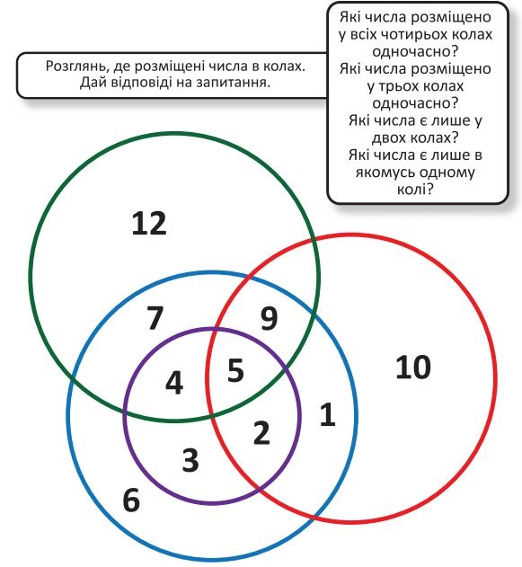

17 січня — День дитячих винаходів, тож тема тижня ще й збігається з днем, який вже давно відзначають у всьому світі. Дату обрано невипадково: це день народження одного з видатних американців — державного діяча, дипломата, вченого, винахідника, журналіста Бенджаміна Франкліна. Свій перший винахід — пару ласт для плавання, які надягали на руки, — Бен Франклін зробив у 12 років.
Щороку понад 500 тисяч дітей і підлітків винаходять різні ґаджети та ігри, створюють і модифікують роботів і техніку. Тож дитячі винаходи, поза сумнівом, роблять наше життя зручнішим.
Поговоріть із малятами, що цікавіше: вигадувати щось нове чи вдосконалювати вже знайомі речі. Розкажіть їм про найбільш визначні винаходи людства, про професії інженера та науковця, про важливу роль точних і природничих наук сьогодні. Порадійте креативності малят і надайте їм можливість спробувати себе в ролі винахідників.
Підсумовуючи тиждень, обговоріть із малятами, які риси характеру мають бути притаманні винахідникам. Важливо, пригадати не лише суто професійні якості, а й доброту, уважність до інших людей, щирість тощо. Адже кожний винахідник має думати не лише про технічну досконалість свого витвору, а й про те, добро чи зло він принесе іншим людям, природі, нашій Землі.
Бесіда “Винаходи навколо нас”.
Діалог-розмірковування “Яким має бути справжній винахідник?”.
Гра-асоціація “Що придумала природа?”.
Дослідження “Як змінювалися знайомі нам речі”.
Гра-дослідження “Для чого нам може згодитися скріпка (паличка, кубик, аркуш паперу)”.
Корисні завдання
Визначаємо, які числа розміщено в колах
Це завдання допоможе дитині розвинути математичне мислення, увагу й кмітливість. Дитині пропонується розглянути, де розміщено числа в колах і відповісти на декілька запитань: які числа розміщено у всіх чотирьох колах одночасно, які числа розміщено у трьох колах одночасно, які числа є лише у двох колах, які числа є лише в якомусь одному колі? Виконуючи завдання, дитина розвиватиме логіко-математичні здібності, пізнавальну активність, учитиметься моделювати математичні ігри.
Багатовимірна головоломка (до с. 24 підручника)
Кросворд "Винаходи навколо нас" (до с. 19 підручника)
Хмара букв, де заховані винаходи
Техніка: від минулого до сьогодення (до с. 18 підручника)
Складаємо ланцюжок, що показує, як змінювалися вже звичні нам прилади